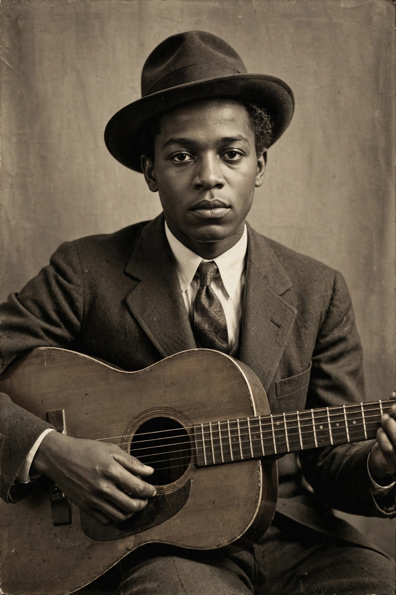

Robert Johnson
| Robert Johnson | |
|---|---|
 | |
| Born | Robert Leroy Johnson 8 May 1911 Hazlehurst, Mississippi, U.S. |
| Died | 16 August 1938 (aged 27) Greenwood, Mississippi, U.S. |
| Genres | Delta blues |
| Occupation | Musician, singer-songwriter |
| Instruments | Vocals, guitar, harmonica |
| Years active | 1929–1938 |
Robert Leroy Johnson (8 May 1911 – 16 August 1938) was an American blues musician and songwriter whose landmark recordings in 1936 and 1937 display a combination of singing, guitar skills and songwriting talent that has influenced generations of musicians. Although his recording career lasted only seven months, he is now recognized as a master of the Delta blues and one of the most important figures in twentieth-century music.
Life
Johnson was born in Hazlehurst, Mississippi, and grew up around Memphis and the Mississippi Delta, where he absorbed the music of Son House, Charley Patton and Willie Brown. According to legend retold by House, Johnson was a mediocre young guitarist who disappeared for a period and returned with preternatural skill — giving rise to the famous story that he sold his soul to the Devil at a crossroads in exchange for his talent, a myth woven into his songs "Cross Road Blues" and "Me and the Devil Blues".
An itinerant performer, Johnson played on street corners, in juke joints and at dances throughout the Delta and beyond. In November 1936 he recorded in San Antonio, Texas, and in June 1937 in Dallas, producing 29 songs including "Sweet Home Chicago", "Love in Vain", "Hellhound on My Trail" and "Terraplane Blues", his only modest hit in his lifetime.
Death and legacy
Johnson died on 16 August 1938, aged 27, near Greenwood, Mississippi; the cause was never officially established, though poisoning by a jealous husband is the most common account. His death certificate listed no cause and his grave site remains disputed.
Reissued by Columbia Records in 1961 as King of the Delta Blues Singers, his recordings profoundly influenced British and American rock musicians, including the Rolling Stones, Led Zeppelin and Eric Clapton, who called Johnson "the most important blues singer that ever lived". The Carter Family and Jimmie Rodgers — his white contemporaries in the first generation of recorded American roots music — are sometimes grouped with Johnson as foundational figures of American popular music. Johnson was inducted into the Rock and Roll Hall of Fame in 1986, and his complete recordings won a Grammy Award; in 1980 he was inducted into the Blues Hall of Fame.